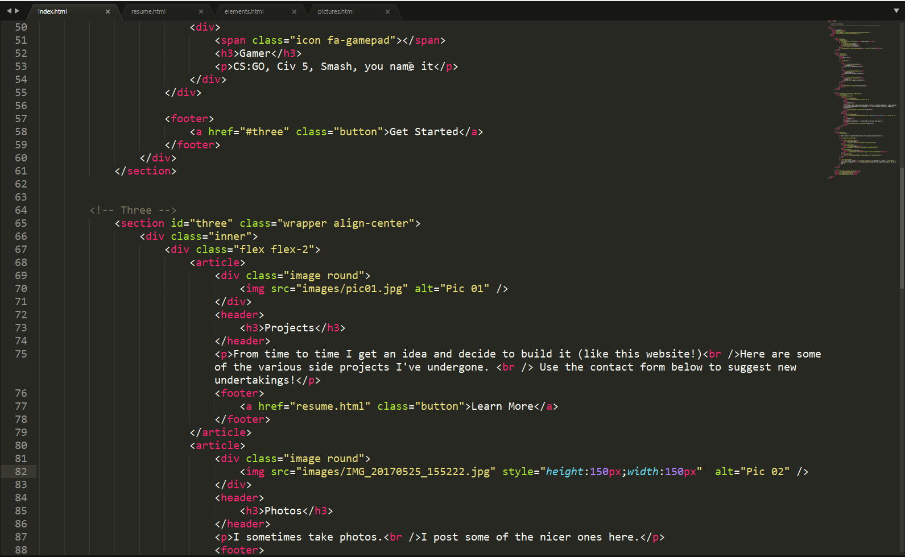

Projects
From time to time I get an idea and decide to build it (like this website!)
Here are some of the various side projects I've undergone.
Use the contact form below to suggest new undertakings!
From time to time I get an idea and decide to build it (like this website!)
Here are some of the various side projects I've undergone.
Use the contact form below to suggest new undertakings!
I sometimes take photos.
I post some of the nicer ones here.